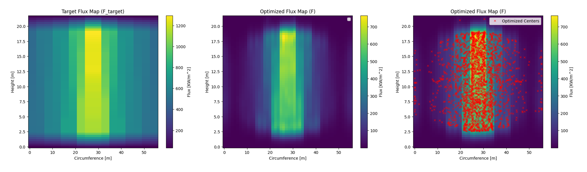
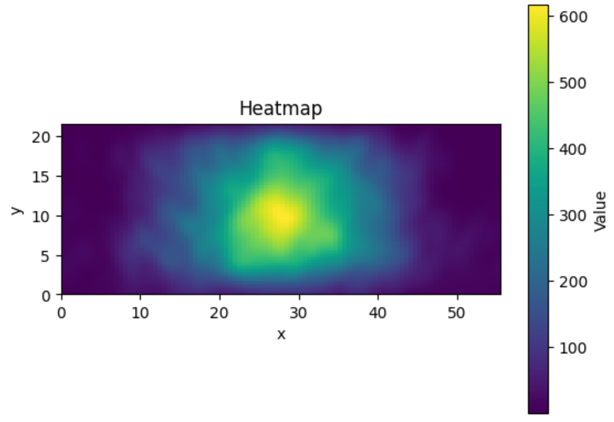

Heliostat Aimpoint Optimization Research
Prometheus is an NREL research project to optimize the performance of a solar power tower energy plant. This type of plant generates energy by using a field of mirrors to direct sunlight up to a central receiver. The driving problem is how to aim these heliostats to balance power output and receiver lifetime. My work involves modeling the the plant using Python and C++ to better understand its performance.
The above animation shows the results of simulating a cloud passing over a heliostat field, affecting the total flux. I created this simulation using the solarPILOT api and writing my own script to impose cloud conditions. We represent the cloud first with a binary matrix, which is then converted into a coordinate map through user input shifting and scaling values. Each heliostat is mapped to this coordinate system to determine weather it is being shaded or not. If a heliostat is shaded, it's "soiling value" is modified through the api and its flux contribution is recalculated to reflect lower irradiance. By doing this for every heliostat, we get a realistic image of flux on the receiver when a cloud is blocking sunlight. We can then create a time step by shifting the mask coordinate system over by a user specified "wind value", updating solar position in the api, and resimulating while storing data at each iteration. The final result is an animation of receiver flux over time as a cloud passes over the field, which is the animation pictured above.
Use the SolarPILOT API with a Hermite approximation to efficiently extract image parameters for every heliostat in the field.
Model each heliostat's flux footprint as a 2D Gaussian and project it onto the cylindrical receiver analytically.
Minimize the difference between the total flux and a target profile by solving for optimal aimpoint offsets.
Validate optimized aimpoints by running a full SolTrace raytracing simulation and comparing against the target flux.
A solar power tower system concentrates sunlight from a large heliostat field onto a central receiver. Each heliostat's aimpoint is controlled by motors adjusting its azimuth and zenith angle. Flux concentration must be carefully managed — excessively high flux can damage the receiver and reduce its operational lifetime. Because sun position, cloud cover, and dust accumulation change continuously, aimpoints must be updated in real time, which existing raytracing-based methods cannot support at scale.
Two coordinate frames are used. The world frame \([x^w, y^w, z^w]\) has its origin on the ground directly beneath the receiver, with \(x^w\) pointing east, \(y^w\) north, and \(z^w\) upward. The receiver frame \([x, y]\) is obtained by unwrapping the cylindrical receiver, with the origin at the bottom-northmost point; \(x\) follows the circumference north-to-east and \(y\) points toward the top. Aimpoint optimization is performed entirely in the 2D receiver frame.
Field-level constants (tower height, receiver dimensions, rated power) are set first. The SolarPILOT API then generates the field geometry and runs a single Hermite-approximation simulation to extract per-heliostat parameters cheaply — far less computation than raytracing.
| Symbol | Description | Units |
|---|---|---|
| \(N\) | Number of heliostats in the field | — |
| \(h_t\) | Tower height | m |
| \(r\) | Receiver radius | m |
| \(h\) | Receiver height | m |
| \(A_i\) | Peak flux amplitude of heliostat \(i\) | W |
| \((\sigma_x, \sigma_y)_i\) | Image size (standard deviations) of heliostat \(i\) | m |
| \((x^*, y^*)_i\) | Normal aimpoint of heliostat \(i\) in receiver coordinates | m |
Each heliostat's flux footprint on a flat plane normal to its aimpoint is modeled as a 2D Gaussian:
To steer a heliostat away from its normal aimpoint, we define an offset \((a_i, b_i)\) in the \(x\) and \(y\) receiver directions:
Projecting onto a cylindrical receiver requires two helper functions. The argument function maps a flat-plane \(x\)-displacement to the curved surface:
The modifier function captures the flux attenuation due to receiver curvature:
Combining these, the projected image of heliostat \(i\) as a function of its aimpoint offset is:
The total flux on the receiver is the superposition over all heliostats:
Given a target flux profile \(t(x,y)\), we minimize the normalized residual between \(g\) and \(t\) using gradient descent. The loss function is:
The descent direction is determined by partial derivatives with respect to each aimpoint offset:
The \(2N\) design variables are the offsets \((a_i, b_i)\) for each heliostat, constrained so that every aimpoint remains on the receiver surface:

To confirm correctness, the optimized offsets are fed back into SolarPILOT: each heliostat's aimpoint is updated to \((x^*_i + a_i,\; y^*_i + b_i)\) and a full SolTrace raytracing simulation is run. The resulting flux distribution is compared against the target profile. This step is used only for method validation and would not be needed in a deployed real-time system.
